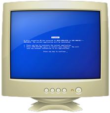

I've been producing club-oriented music and DJing as MTLDA since 2017
and performing live as Matilda Sutherland since 2021 ✰
I have a record label at Girl On Road
and do creative web development / / 
The Debut EP from Matilda Sutherland, it features Reverent Prose, and Angelic Vocals atop her signature Alt Country Sound
Written by Matilda Sutherland
Performed by Aife Larkin, Madeline Lo-Booth and Liam Hyland
Produced by Matilda Sutherland and Andrew McEwan
Mixed and Mastered by Andrew McEwan
Music video directed by Ahmed Coshnow, with creative direction by Joseph Leone ✯
Recorded live using a DJM-700 DJ mixer mapped to Pure Data.
God Is A DJ is a Pure Data patch which imbibes the DJ mixer with godly voices. Download the project folder via github.com/girlonroad/god_is_a_dj to hack your own controller.
☆ ｡. .｡.:*･ﾟﾞ .。.：*・゜☆ ｡.:*･ﾟ☆.｡.:*･ﾟﾞ((ε(*っ′∀`)っ† ｡.:*･ﾟ☆.｡.:*･ﾟ ☆*
Released October, 2021 Recorded at Ritzland studios Mixed and Mastered by Andrew McEwan
Dirtstyle is intended as a single page net.art piece to be viewed by the user as the text ‘decays’ before their eyes. This code is heavily inspired by Daniel Temkin's esoteric language 'Entropy' - though it is a pared back emulation.
Concrete Cowgirl is an interactive digital concrete poem set in a neoCowgirl universe,
where The Cowgirl Manifesto resides. In this chapter the Cowgirl must traverse the Urban
Jungle, lose herself in No Mxns Land and, ultimately, take on the Big Daddy Data Wranglers.
Live code performance at Hybrid Live Coding Interfaces (Montreal), November 2021
Read the manifesto here ✰
Skylab Series and Archive
A collaboration with Terrain Projects released on April 22nd, 2020. The Digital Directory was a celebration of Earth Day, and a commemoration of the travelling lost to Covid-19. Through the directory users were able to travel to different destination in their browser, emulating jetlags lost.
design and development using Cargo CMS
design and development using Cargo CMS
design and development using Cargo CMS
matildasutherland.contact(a)gmail.com
girlonroad.tech(a)gmail.com
© 2021